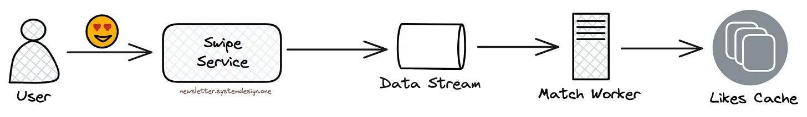

How Tinder Scaled to 1.6 Billion Swipes per Day
#40: Break Into Tinder Architecture (7 minutes)

Get my system design playbook for FREE on newsletter signup:
This post outlines Tinder's architecture. If you want to learn more, scroll to the bottom and find the references.
Share this post & I'll send you some rewards for the referrals.
Once upon a time, there lived a student named Kenji in Okinawa, Japan.

He’s moving to Australia for higher studies.
But one day, his girlfriend breaks up with him.
So he was sad.
He hears about a platform to connect people called Tinder.
Although an introvert, he decides to try it.

Tinder Architecture
Here’s a simplified version of Tinder architecture:
Chapter 1: Get Over the Breakup
Kenji creates a Tinder profile and adds extra information.

They store the user information in a key-value database like Amazon DynamoDB. And use Dynamo Streams to push out changes on a table to different places automatically.
Also the user information gets added to the message queue to update the location index. They use the location index to find nearby users efficiently.

They provide public APIs through an API Gateway. That means it acts as a central entry point for user requests to the infrastructure. And handles user authorization and security rules.
They run around 500 microservices. And use service mesh to communicate between the services. Imagine service mesh as a network infrastructure for managing microservices communication efficiently.
Chapter 2: The Lady From Okinawa
Kenji is shown Tinder profiles of people living nearby.
It’s difficult to find nearby people only based on a person’s latitude and longitude values.
Also they don’t divide the world map into evenly spaced grids to avoid the hot-shard problem. Because the grids in the ocean will be empty. While grids in big cities will have many users. A hot shard is an excessive load on a single partition.
Instead they use the S2 library. S2 is a square-shaped hierarchical geospatial indexing system created by Google.
It’s a stable library supporting many programming languages. Put another way, they use S2 to recommend people in real time and shard the location database.

S2 divides Earth’s surface into cells on a flat grid, giving each cell a unique identifier with a 64-bit integer. In other words, a small cell represents a small area of the earth.
They store the users physically closer to each other in the same database shard. Thus reducing the need to query many shards to find nearby users.
And S2 is hierarchical. That means the cell size varies from square centimeters to square kilometers.
Also it supports finding a specific cell using the latitude and longitude. And provides the functionality to find the surrounding cells of a specific cell.

S2 is based on the Hilbert curve. Imagine the Hilbert curve as a line that covers every point in a square by folding and looping in a special way. While two points that are close in the Hilbert curve are also close in physical space. That means it preserves spatial locality.
Each small Hilbert curve represents an S2 cell. While four adjacent cells form a bigger cell, and a quadtree represents a 2D Hilbert curve. A quadtree is a tree data structure where each node has exactly four children.

They query the location index (S2) to find nearby users. It returns all the database shards close to a specific location. After that, they query all the relevant database shards in parallel to get the list of users in those shards.
On average they query 3 database shards to find nearby users within a 160 km radius. Also they filter the results based on user preferences before recommending people.

Kenji meets up with a lady from Okinawa.
But it didn’t work out because she wasn't interested in a long-distance relationship.
Chapter 3: Okinawa to Sydney
Kenji thought matching on Tinder with someone in Sydney, Australia would make more sense.
So he uses Tinder’s feature called Passport to change his location.

They update the index on user location changes. So people from the new location could see the user. In other words, they add the user to the new location index and remove the user from the old index.
Yet these operations aren’t atomic, so there’s a risk of failures.
Until one day Kenji updated the profile to the new location. And immediately changes back to the original location. But his user data still pointed to the new location as the operations weren’t executed in the same order.

So they use Apache Kafka to solve this problem. Think of Kafka as a distributed streaming platform for large-scale data processing.
They sent the same user data to the same Kafka partitions. While Kafka consumers acquire locks on the partitions to avoid contention. Thus providing a FIFO queue implementation with ordering guarantees and very high throughput.
Also they checkpoint Kafka so the processing could resume after a process crash.
Chapter 4: Zoe and Kenji
Kenji kept swiping on Tinder.
And days passed.

They send swipes to a data stream like Amazon Kinesis. And run match workers to read the data stream and check whether there’s a match from the Likes cache.
While the Likes cache stores the information about people a user has liked.

They use WebSockets to notify users if there’s a match. Thus giving a real-time experience. WebSockets is a real-time, bidirectional communication protocol.

They put the disliked profiles by a person into a data storage like Amazon S3. And use that information for data analysis to improve user recommendations.

Until one day. Kenji matched with Zoe.
A lady from Sydney.
Chapter 5: Problems Are Guidelines
They calculate the unique number of users to find the load on a shard. And users within a shard are usually in the same time zone.

A hot shard problem will likely occur due to time zone differences. That means the peak traffic will differ across locations due to time differences. And cause unbalanced traffic across shards.
Yet a single shard in a physical server would make it worse. So they randomly assign many shards to the same physical server to prevent the hot shard problem.

Also most data operations at Tinder are read operations. So they use Redis cache for scale.
They use the cache-aside pattern. In other words, they check the cache for data. And if it’s absent, they fall back to the database. Also the cache gets updated with the data.
So the cache layer solves the read hot shard problem. While they do rate limiting to handle the write hot shard problem.
Besides they do exponential backoff with jitter on a failure. And run a background job periodically to synchronize the data stores.
Tinder remains one of the largest dating platforms. And handle around 26 million matches a day.

While Kenji and Zoe lived happily ever after.
Consider subscribing to get simplified case studies delivered straight to your inbox:

Thank you for supporting this newsletter. Consider sharing this post with your friends and get rewards. Y’all are the best.

References
Now More Than Ever, Having Someone To Talk To Can Make A World Of Difference
AWS re: Invent 2017: Tinder and DynamoDB: It's a Match! Massive Data Migration, Zero (DAT328)
Building resiliency at scale at Tinder with Amazon ElastiCache
Google’s S2, geometry on the sphere, cells, and Hilbert curve
Using Apache Kafka as a Scalable, Event-Driven Backbone for Service Architectures
Image taken from Hilbert 3D
Image taken from Hilbert curve
Basically, the algorithm of...love! 😅
I love how you tie the different user's into this, it makes for a great read. Thanks for sharing🙏🙌